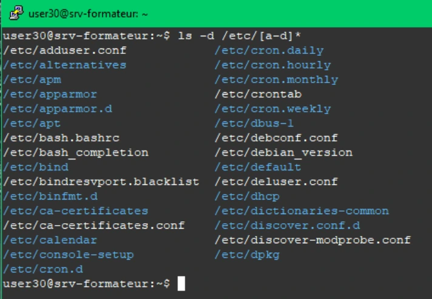
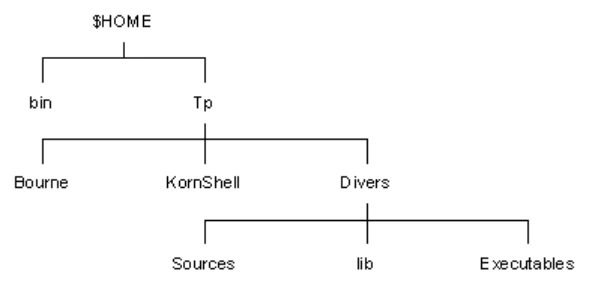
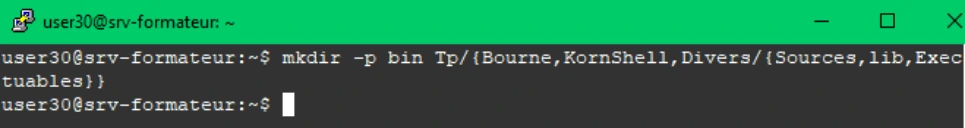
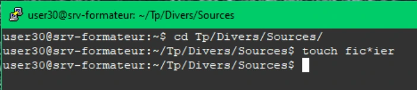
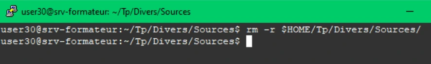
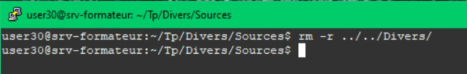
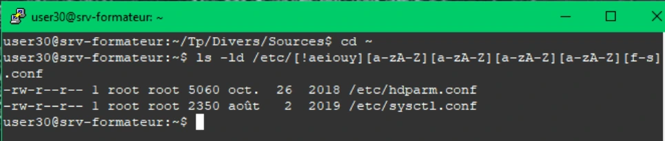

Transcription du document de formation ; texte et captures isolées sont distincts de l’aide pédagogique.
Les métacaractères
TP du Module 06 – Spécificités du shell Bash
Avant de démarrer ce TP, il convient d’avoir suivi les vidéos des modules 6.
Avoir effectué le TP précèdent
Durée estimée
45 à 60 minutes
Proposition de solution
En fonction du module que vous venez de parcourir, vous trouverez les commandes nécessaires pour répondre aux questions.
Afficher les fichiers et répertoires (pas leur contenu) dont le nom commence par a, b, c ou d du répertoire /etc.
ls -d /etc/[a-d]*
Créer l'arborescence suivante dans votre répertoire de travail ($HOME) en une seule ligne de commande :

Visuel isolé du document — M04TP02 - Solution - Métacaractères
mkdir -p bin Tp/{Bourne,KornShell,Divers/{Sources,lib,Executables}}
Positionnez-vous dans le répertoire Sources. Dans ce répertoire, créer un fichier qui comporte, dans son nom, un astérisque.
cd Tp/Divers/Sources/
touch fic*ier
Sans vous déplacez dans l’arborescence, essayer de supprimer le répertoire Sources en utilisant la commande rmdir. Que constatez-vous ?
Remarque : La commande rmdir peut être utilisée uniquement pour supprimer des
répertoires vides, alors que rm -r permet de supprimer des fichiers et des répertoires
non vides ainsi que leurs contenus, si l'option -r (récursive) est utilisée.
rm -r $HOME/Tp/Divers/Sources/
On constate que même positionné dans un répertoire nous pouvons le supprimer
Supprimer le répertoire Divers en utilisant la commande rm.

Visuel isolé du document — M04TP02 - Solution - Métacaractères

Visuel isolé du document — M04TP02 - Solution - Métacaractères

Visuel isolé du document — M04TP02 - Solution - Métacaractères

Visuel isolé du document — M04TP02 - Solution - Métacaractères
rm -r ../../Divers/
Après vous être positionné dans votre répertoire d'accueil, afficher la liste détaillée des fichiers répondants aux critères suivants :
ils sont présents directement dans /etc
leurs noms finissent par l'extension .conf
la première lettre est une consonne, celle précédant l'extension est comprise entre f et s
ils comportent exactement 6 lettres (hors extension).
ls -ld /etc/[!aeiouyAEIOUY][a-zA-Z][a-zA-Z][a-zA-Z][a-zA-Z][f-s].conf

Visuel isolé du document — M04TP02 - Solution - Métacaractères

Visuel isolé du document — M04TP02 - Solution - Métacaractères